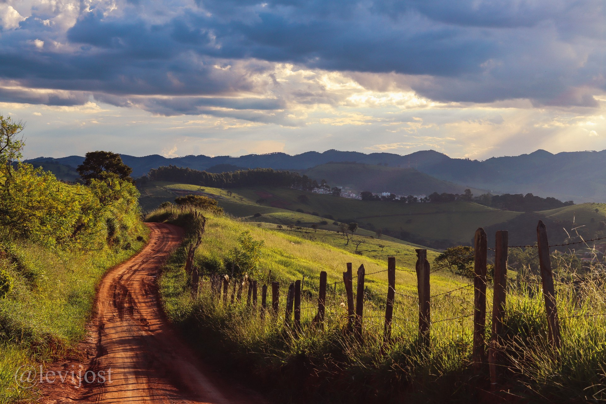
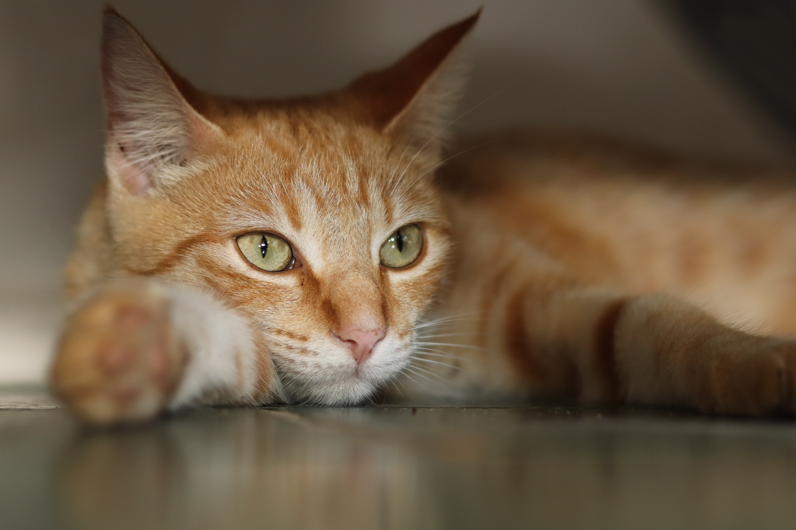

About me
Born with an innate curiosity and a deep reverence for nature, Levi embarked on their photographic journey at a young age. Exploring the untouched landscapes of their childhood, they developed an unbreakable bond with the natural world, nurturing their passion for photography to communicate the indescribable beauty they encountered.

"God left us the world unfinished for man to work his skill upon. He left the electricity in the cloud, the oil in the earth. He left the rivers unbridged and the forests unfelled and the cities unbuilt. God gives to man the challenge of raw materials, not the ease of unfinished things. He leaves the pictures unpainted and the music unsung and the problems unsolved, that man might know the joys and glories of creation."
- Thomas S. Monson.
landscape

Wildlife
